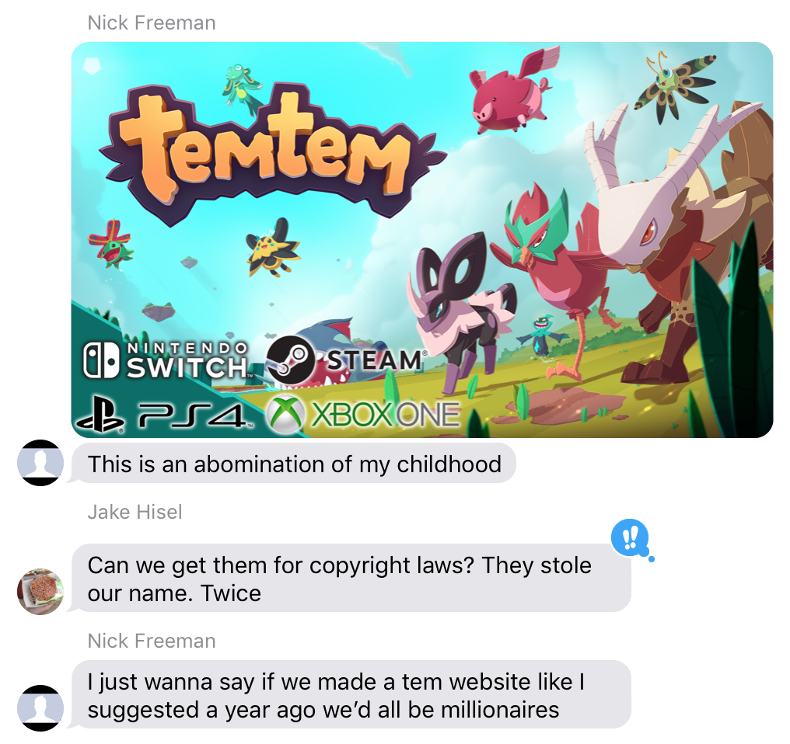
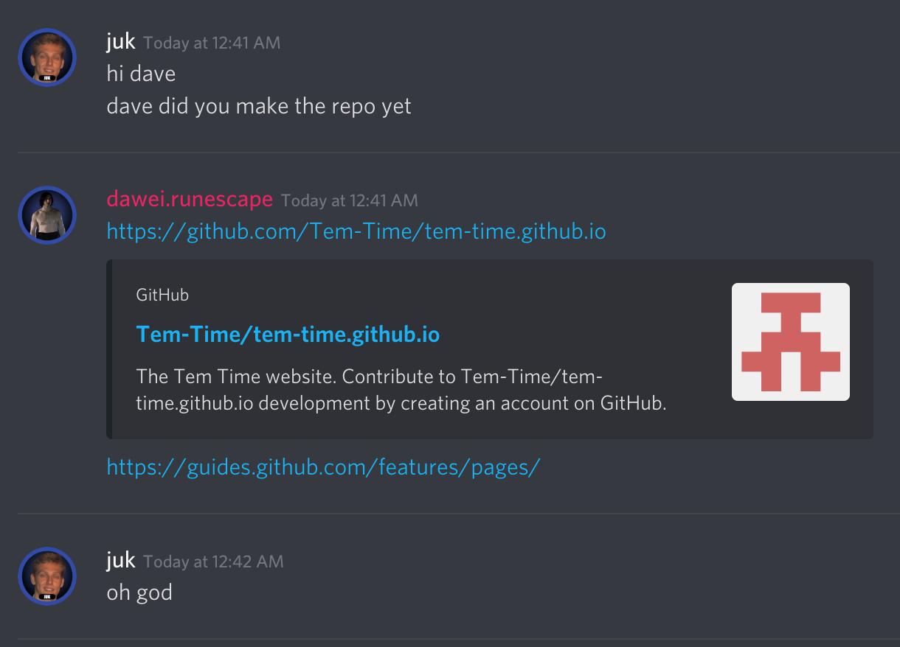

Obviously, the most captivating way to start any piece of writing is saying... "Before we get schtarted, we should probably cover a few definischinz 🤓" And so, we'll do just that. According to Urban Dictionary..."
It all started as something beautiful... An idea -- rooted in friendship, passion, raw intelligence, and good looks. The beauty of it is, when we look back as billionaires to this humble beginning... We won't be like most entrepreneurs who think "i WaS jUsT sOlViNg A pRoBlEm" or "iT sTaRtEd wItH a SiMpLe ApP iDeA".... NO. Instead, we'll see the seed planted with the in·dom·i·ta·ble force of 1337 g4m3r friendship.
For those of you who have stumbled upon this page, you have truly encountered an iconic piece of history. As part of the good fortune you have tripped upon, I shall also anoint you with some image artifacts that are as precious as the manuscripts of the Dead Sea Scrolls, the oral revelation of the Qu'Ran to Muhammad, or the gruesome messages from the early days of the Tem Time Discord server.
|  |  |
|---|